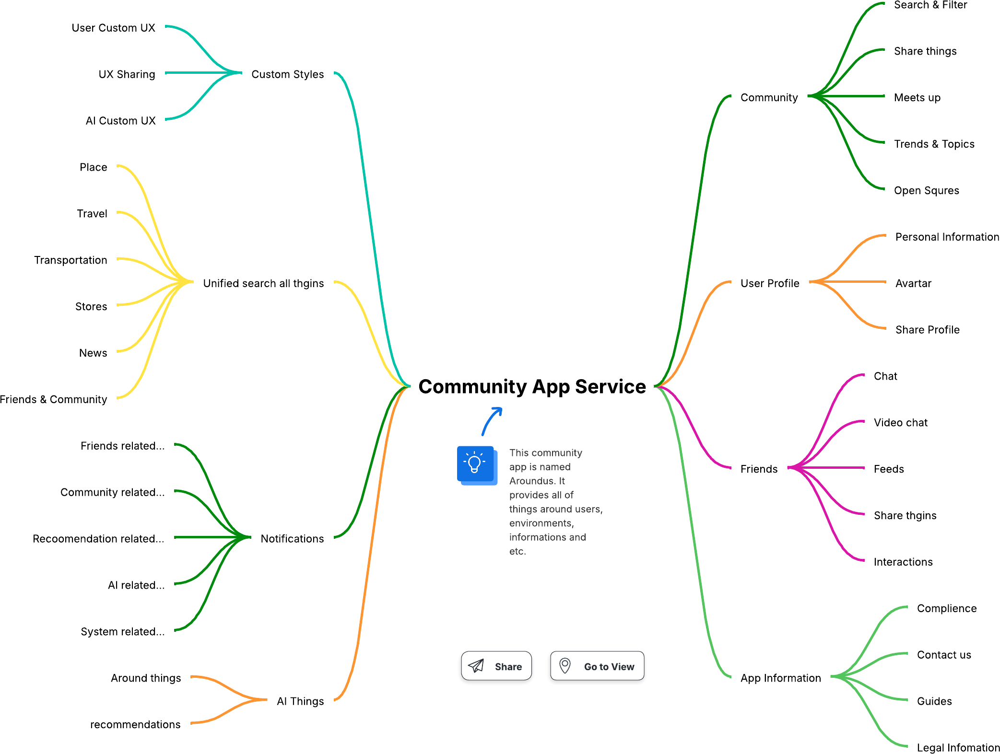
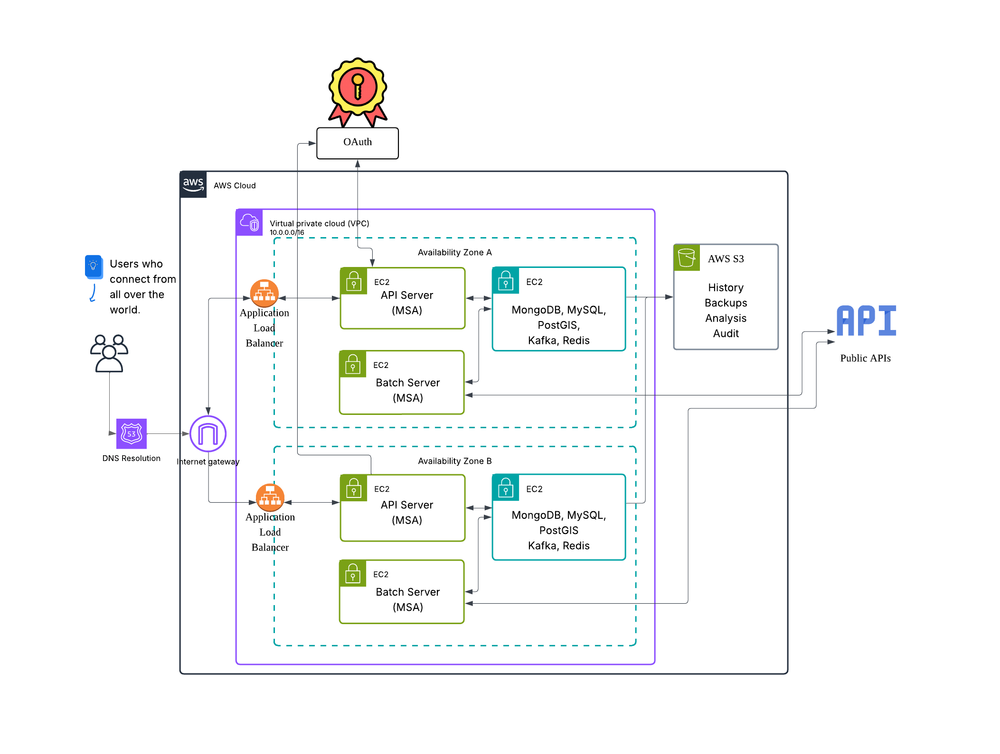

🌐 AroundUs: 커뮤니티 앱 서비스
AroundUs는 마이크로서비스 아키텍처(MSA)를 기반으로 구축된 현대적이고 확장 가능한 커뮤니티 기반 애플리케이션 플랫폼입니다. 사용자는 지역 및 관심 기반 커뮤니티를 통해 연결되며, 위치 탐색, 소셜 네트워킹, 실시간 채팅, 추천 등 다양한 기능을 제공합니다.
📱 프로젝트 개요
- React Native 모바일 앱 – iOS 및 Android용 크로스 플랫폼 모바일 프론트엔드.
- Node.js Express 마이크로서비스 – 사용자 프로필, 게시물, 친구, 알림 등 개별 도메인을 관리하는 백엔드 서비스 세트.
- 도커화된 서비스 – 각 백엔드 서비스는 독립적인 배포 및 확장을 위해 컨테이너화됨.
- GitHub Actions CI/CD – 프론트엔드 및 백엔드를 위한 지속적 통합 및 배포 워크플로우.
- 클라우드 준비 – Kubernetes 또는 클라우드 환경에서 확장성과 장애 내성을 고려하여 설계됨.
🧩 기능 및 서비스 도메인

🟢 커뮤니티
- 게시물 및 아이템 공유
- 검색 및 필터
- 모임, 주제 및 트렌드
- 오픈 커뮤니티 시스템
🔵 사용자 프로필
- 아바타 및 소개
- 개인 정보
- 프로필 공유
🟣 친구
- 친구 목록 및 상호작용
- 채팅 및 화상 채팅
- 공유 권한
🟡 알림
- 이벤트, 친구, 커뮤니티 뉴스 및 시스템 이벤트에 대한 실시간 알림
- AI 기반 추천
🟠 앱 정보
- 준수, 연락처, 법적 정보
- 가이드 및 지원
🧠 카테고리 및 커뮤니티 주제
AroundUs는 다음과 같은 다양한 관심 기반 커뮤니티를 지원합니다:
- 🏘️ 지역 및 이웃
- 🍽️ 음식 및 음료
- 🎮 취미 및 관심사
- 💪 건강 및 웰빙
- 🧑🤝🧑 소셜 및 모임
- 🐶 반려동물 및 동물
- 🎓 학습 및 성장
- 💼 구매, 판매 및 거래
- 🌱 환경 및 지속 가능성
🏗️ 시스템 아키텍처
AroundUs는 컨테이너 기반 마이크로서비스 설계를 사용하여 구축되었습니다:
- API 게이트웨이 – 클라이언트를 위한 통합 진입점
- 다수의 앱 서버 – 전용 Node.js 마이크로서비스
- 서비스별 독립 데이터베이스 – MongoDB, MySQL, Redis, Kafka
- GitHub Actions를 통한 CI/CD
- 서드파티 통합을 위한 선택적 공개 API

📁 프로젝트 구조
├── mobile-app/ # React Native 프론트엔드 (iOS & Android)
├── services/ # 마이크로서비스 백엔드 컴포넌트
├── README.md # 루트 README🧩 마이크로서비스 세부사항
- ai-service/: 추천 및 개인화 로직 제공.
- analytics-service/: 사용자 활동 및 시스템 메트릭 추적.
- auth-service/: 인증, JWT 토큰 및 OAuth2 처리.
- chat-service/: 채팅방, 실시간 메시징 및 화상 통화 관리.
- feed-service/: 소셜 피드 생성 및 필터링 담당.
- post-service/: 소셜 포스트 생성, 수정, 삭제 및 필터링 담당.
- info-service/: 앱 전반의 메타데이터, 가이드 및 법적 정보 저장.
- notification-service/: 푸시, 이메일 및 인앱 알림 전송.
- search-service/: 사용자, 게시물, 태그 및 지역 콘텐츠 검색 엔진.
- user-service/: 사용자 프로필, 아바타 및 사용자 설정 관리.
- web-service/: 웹 대시보드 또는 관리자 뷰 처리.
📱 모바일 앱 구조 (React Native + Expo)
mobile-app/
├── components/ # 재사용 가능한 UI 컴포넌트
├── constants/ # 앱 전역 상수 값
├── hooks/ # 커스텀 React 훅
├── scripts/ # 빌드 또는 배포 관련 스크립트
├── proxy-*.js # 백엔드용 로컬 개발 프록시
├── app.json # Expo 설정
├── tsconfig.json # TypeScript 설정
├── server.crt/key # 로컬 SSL 인증서🛠️ 기술 스택
- 프론트엔드: React Native, Expo, TypeScript
- 백엔드: Node.js, Express, MongoDB, Redis, Kafka
- DevOps: Docker, Docker Compose, GitHub Actions
- 클라우드 준비: K8s, AWS S3, 로드 밸런서, API 게이트웨이
🚀 시작하기
각 마이크로서비스는 services/ 디렉토리 아래에 있으며 다음을 포함합니다:
- Dockerfile
- package.json
- src/ 디렉토리
로컬 실행 (Docker Compose 사용)
docker-compose up --build백엔드
cd services/
docker-compose up --build모바일 앱
cd mobile-app/
npm install
npx expo start